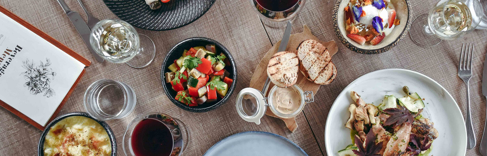

With our authentic menus and grand interiors, Café Rouge is pleased to be the UK's favourite French restaurant. Inspired by French culinary expertise, our menus offer a selection of delicious starters, salads, 'croques' and burgers, alongside a range of classic French dishes like Beef Bourguignon and Steak Frites. In addition to our range of delectable desserts, with melt-in-your-mouth Crème Brûlée and zesty Lemon Tarte amongst the options available, we invite you to enjoy Café Rouge's Afternoon Tea. Our divine cakes and coffees are the perfect pairing to sweeten your day. Ensuring every diner can enjoy our selection of signature French dishes, we also provide a range of vegetarian, vegan and gluten-free meals at each of our bistros.